正式家园与平原的真实 Godot 画面。地形采用32px/32wu、世界表现统一1wu采样；房屋与树根接地，补暖光、分层晨空与山脊，以及稀疏前景。
这是视频与实机图评审页，不是可操作试玩。录像前12秒为真实家园走跳；后两段各6秒为两张平原地图的连续镜头检查，角色留在出生区，不能当作路线通关。截图为定位诊断；修改前后启动帧/角色姿态有差异，没有同输入before短片。
下载24秒实机短片 · 30镜头Seed/Manifest与层记录 · 真实录制轨迹
森林细木平台与苔草根台的造型仍待统一；前景采用克制策略，部分平原镜头贡献很弱。未签完整美术、玩家或真机认可。未运行完整CI。
图片源码 5ce3cd3d8771d6e44d00cc600b0a73ddb1e6b0a8；最终短片与Web包源码 efd784349efa31502cb428b14bde10ea517bdd9a（增加HUD视口边界修复）。Web已本地导出，公开试玩因900MiB托管上限暂未发布；新建托管仓库权限被拒。
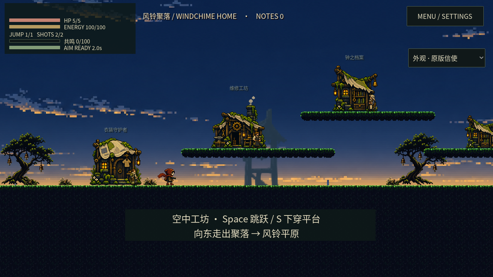
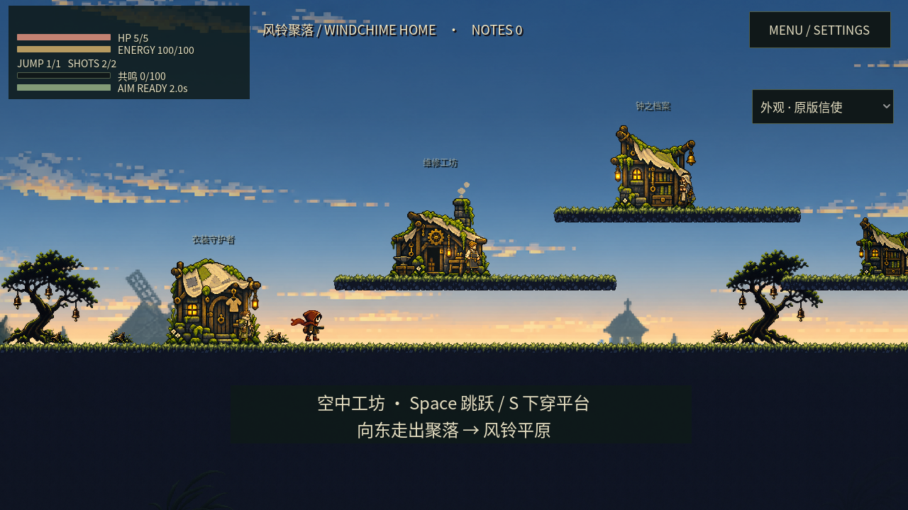
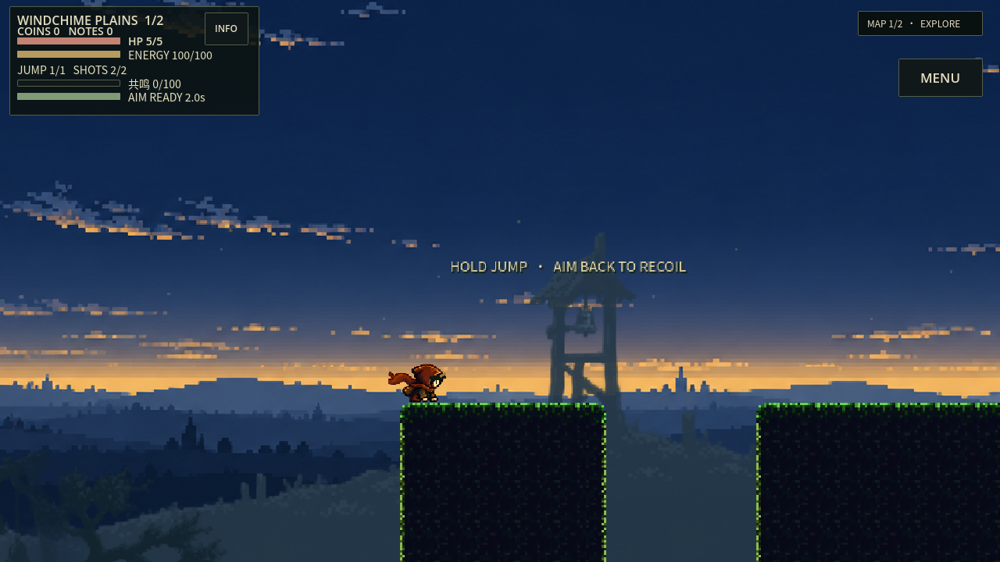
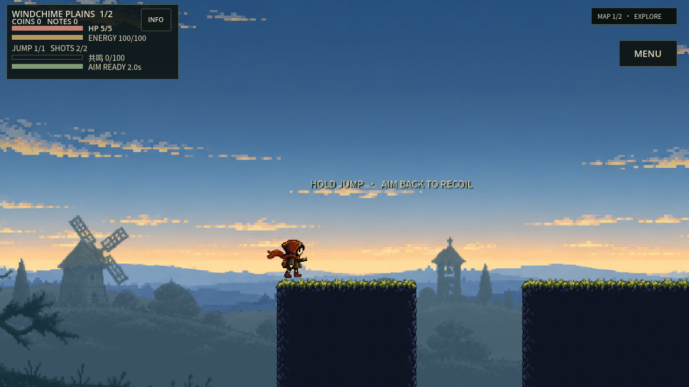
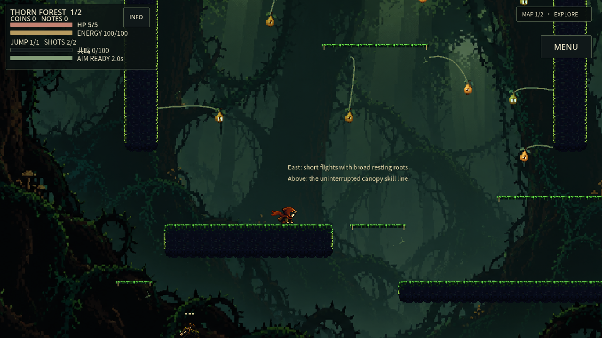
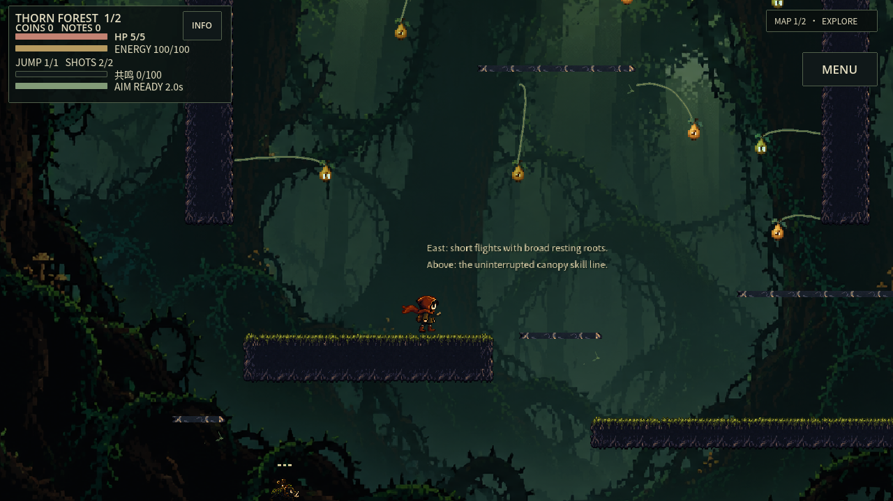
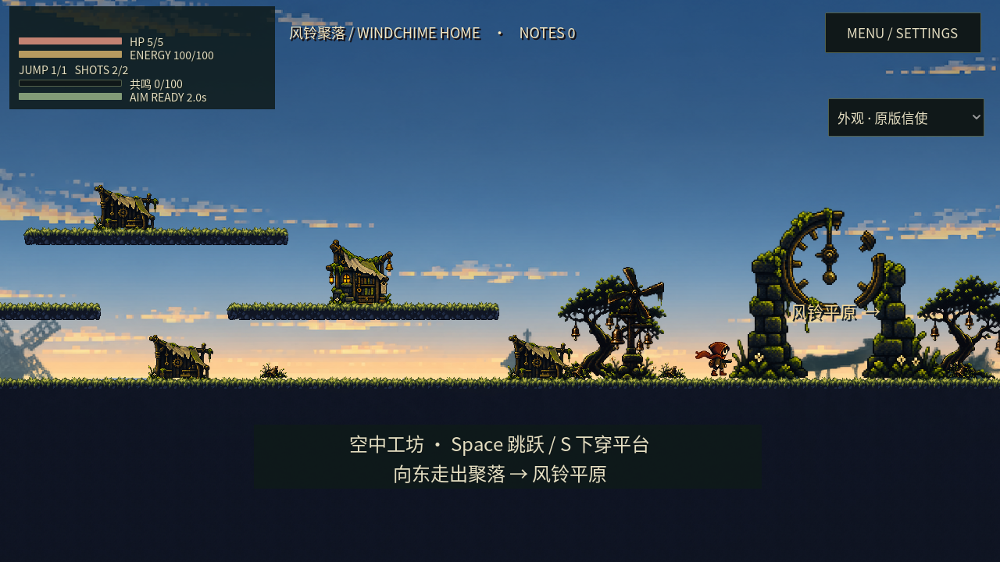
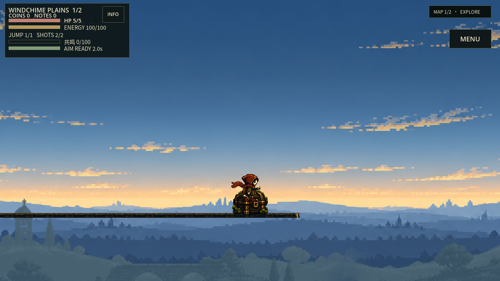
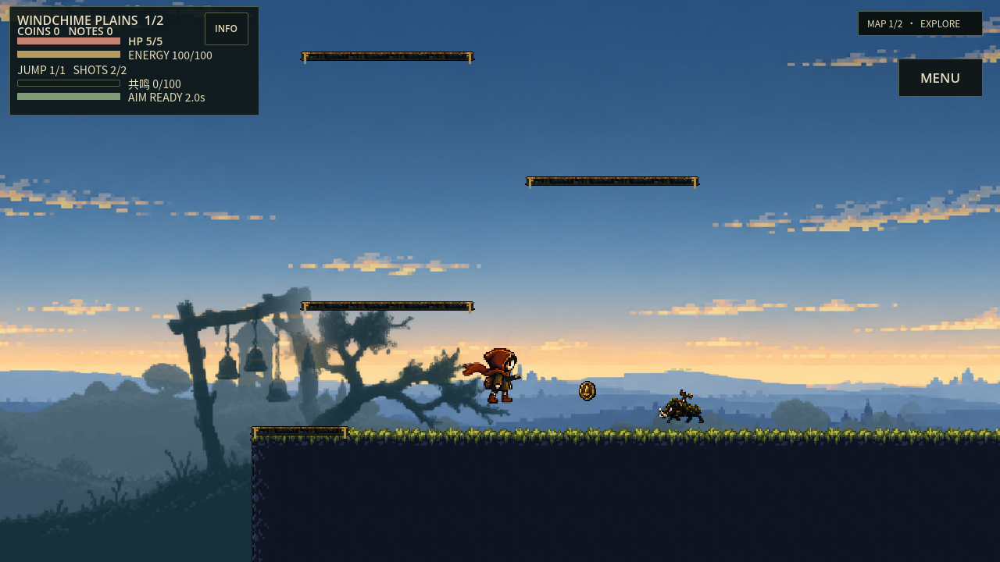
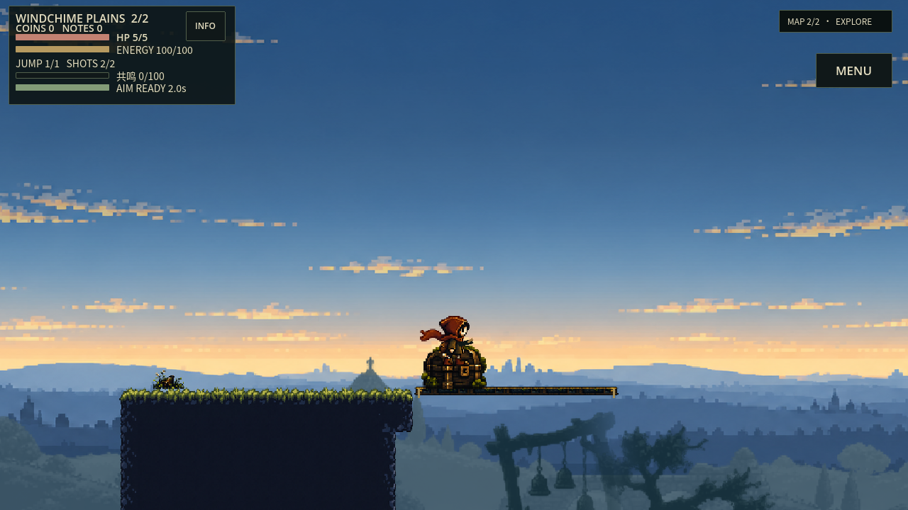
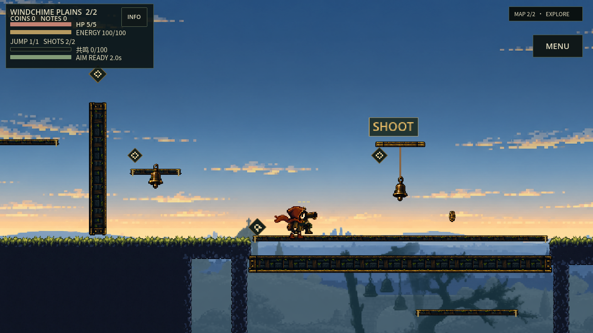
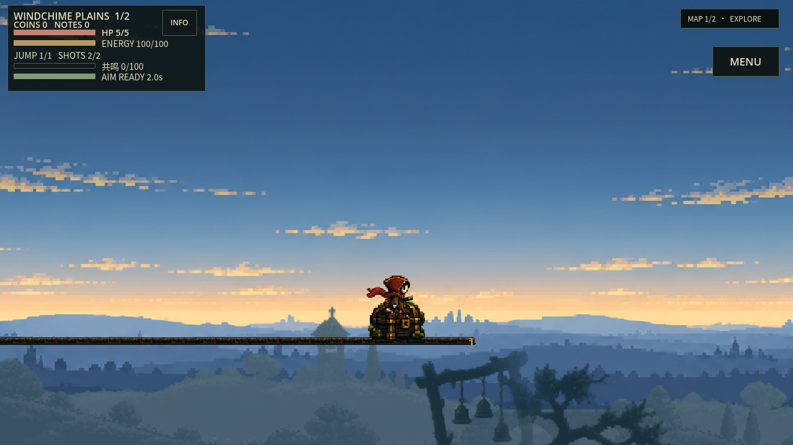